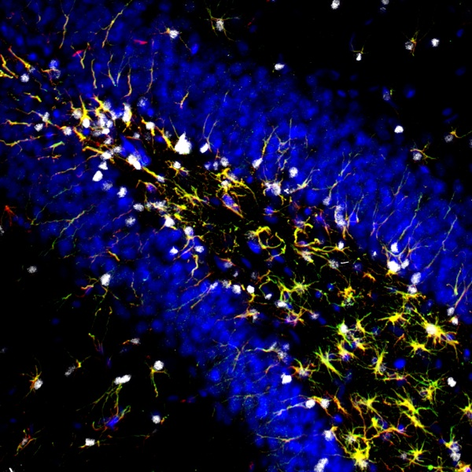
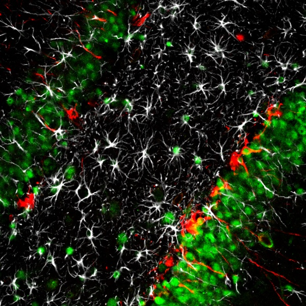
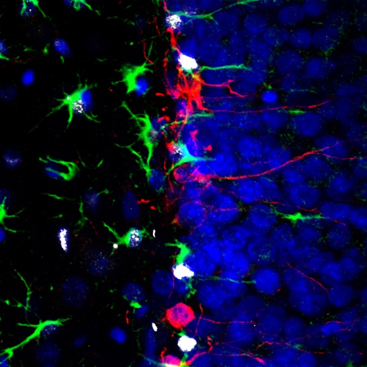
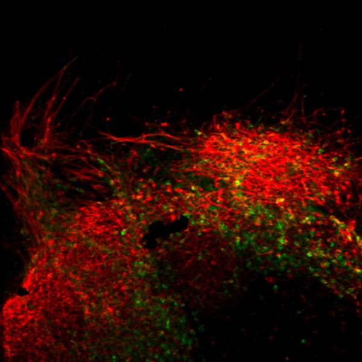
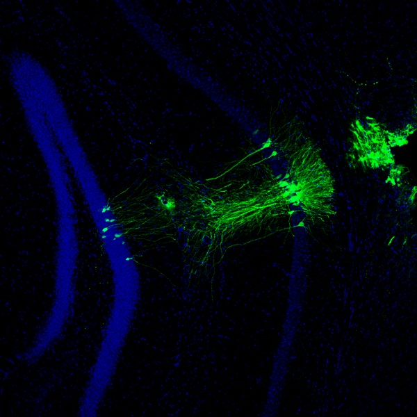
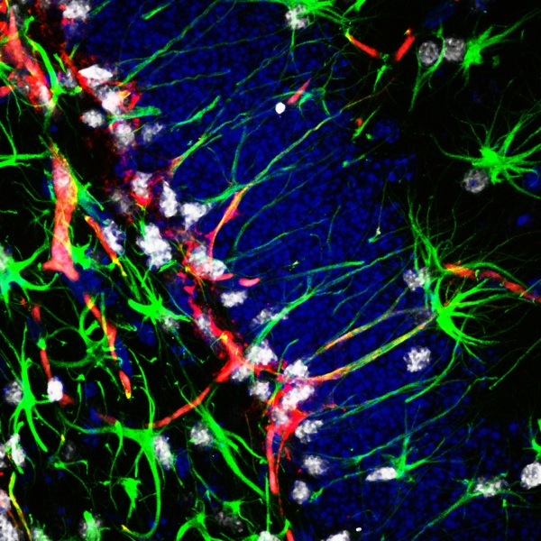
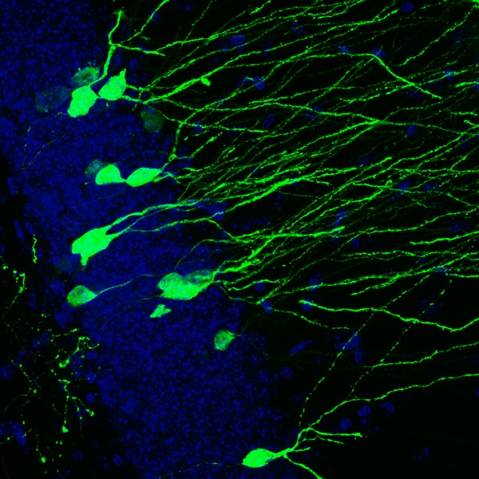
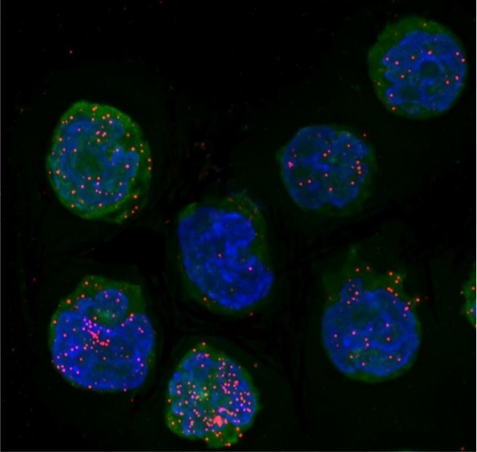

David Schaffer is a Professor of Chemical and Biomolecular Engineering, Bioengineering, and Neuroscience at University of California, Berkeley, where he also serves as the Director of the Berkeley Stem Cell Center. He graduated from Stanford University with a B.S. degree in Chemical Engineering in 1993. Afterward, he attended Massachusetts Institute of Technology and earned his Ph.D. also in Chemical Engineering in 1998 with Professor Doug Lauffenburger, while minoring in Molecular and Cell Biology. Finally, he conducted a postdoctoral fellowship in the laboratory of Fred Gage at the Salk Institute for Biological Studies in La Jolla, CA, before moving to UC Berkeley in 1999. At Berkeley, Dr. Schaffer applies engineering principles to enhance stem cell and gene therapy approaches for neuroregeneration. This work includes mechanistic investigation of stem cell control, as well as molecular evolution and engineering of viral gene delivery vehicles. David Schaffer has received an NSF CAREER Award, Office of Naval Research Young Investigator Award, Whitaker Foundation Young Investigator Award, and was named a Technology Review Top 100 Innovator. He was also awarded the American Chemical Society BIOT Division Young Investigator Award in 2006, the Biomedical Engineering Society Rita Shaffer Young Investigator Award in 2000, and was elected to the College of Fellows of the American Institute of Medical and Biological Engineering in 2010.
Awards and Honors
- Glenn Award for Research in Biological Mechanisms of Aging, 2014
- Distinguished Lindsey Lectureship, Texas A&M, 2012
- Eagleson Award, American Biological Safety Association, 2012
- Fellow, American Institute for Medical and Biological Engineers, 2010
- Robert W. Vaughan Lectureship, California Institute of Technology, 2008
- American Chemical Society Biochemical Technology Division Young Investigator Award, 2006
- Van Ness Award Lecturer, Rennselaer Polytechnic Institute, 2005
- Departmental Citation for Excellence in Teaching, 2003
- Technology Review Magazine “Top 100 Innovator Under 35,” 2002
- American Institute of Chemical Engineers (NorCal) Excellence in Teaching Award, 2002
- Hellman Family Faculty Award, 2001
- Whitaker Foundation Biomedical Engineering Research Award (Young Investigator), 2001-2004
- National Science Foundation CAREER Award, 2001-2006
- Office of Naval Research Young Investigator, 2001-2004
- The Biomedical Engineering Society Rita Shaffer Young Investigator Award, 2000
- Regents' Junior Faculty Award, 1999
- NIH Postdoctoral Fellowship (Individual NRSA), 1998
- MIT Department of Chemical Engineering Outstanding Seminar Award, 1997
- National Science Foundation Graduate Fellowship, 1993 (declined)
- Whitaker Foundation Graduate Fellowship, 1993 (declined)
- Fannie and John Hertz Foundation Graduate Fellowship, 1993 (accepted)
Positions and Employment
- Professor, Department of Chemical Engineering, Department of Bioengineering, & Helen Wills Neuroscience Institute, U.C. Berkeley, 2007-present
- Associate Professor, U.C. Berkeley Department of Chemical Engineering & Helen Wills Neuroscience Institute, 2005-2007
- Assistant Professor, U.C. Berkeley Department of Chemical Engineering & Helen Wills Neuroscience Institute, 1999-2005
- Chemist Scientist Faculty, Physical Biosciences Division, Lawrence Berkeley National Lab, 2005-present
- Director, Berkeley Stem Cell Center, 2011-present
- Co-Director, Berkeley Stem Cell Center, 2009-2011
- Associate Director, Berkeley Stem Cell Center, 2007-2009
Additional Affiliations
- Co-Founder, 4D Molecular Therapeutics, 2013-present
- Editorial Board, Brain Plasticity, 2013-present
- Editorial Board, Technology Journal, 2013-present
- Editorial Board, Molecular Therapy Nucleic Acids, 2012-present
- Scientific Advisory Board, Adheren Inc., 2012-present
- Treasurer & Board of Directors Member, American Society for Gene and Cell Therapy (ASGCT), 2011-2014
- Scientific Advisory Board, Cell Guidance Systems Inc., 2011-2014
- Scientific Advisory Board, Veristem Inc., 2010-present
- Editorial Board, Molecular Therapy, 2009-present
- NIH Study Section, Biomaterials and Biointerfaces (BMBI), 2006-2010
- Editorial Board, International Journal of Neuroprotection and Neuroregeneration, 2004-present
- Advisory Board, Society for Biological Engineering, 2004-present
- Scientific and Technology Advisory Board, Bio-Rad Laboratories, Inc., 2003-present
- Editorial Board, Biotechnology and Bioengineering, 2003-present
- Editorial Board, Journal of Biotechnology and Applied Biochemistry, 2002-2007
Our research group employs molecular and cellular engineering approaches to investigate biomedical problems. We are interested in the related areas of stem cell bioengineering, gene delivery systems, and molecular virology, with applications in regenerative medicine and tissue engineering.
Stem Cells
- 
- 
- 
- 
- 
- 
- 
Many of our efforts are dedicated to understanding the biology and exploring the therapeutic potential of stem cells. Stem cells are immature cells that exist in various locations of our bodies. Throughout our lifetimes, these cells divide and develop into the specialized cells that perform the functions necessary for life. Therefore, if we contract a disease that kills those specialized cells, our stem cells are a potential source for replacing lost cells to counteract or even cure the disorder. There are several challenges that must be overcome in this field. In particular, efforts to engineer tissues rely upon the ability to control stem cells. That is, the signals that control stem cell function and fate must first be discovered, and then integrated into cellular microenvironments to control stem cell expansion and lineage-specific differentiation. We have efforts in novel signal discovery, computational and experimental analysis of the biological networks that cells use to interpret and implement these signals, and on the integration of these signals into synthetic, polymeric microenvironments for optimal stem cell control in collaboration with the group of Prof. Kevin Healy (Bioengineering). This blend of stem cell biology, systems biology analysis, and biomaterials engineering has led to significant advances in the application of stem cells for tissue repair.
Researchers: Ashley, Melissa, Anthony, Hanadie, Lukasz, Marjan, Albert, Dawn, Mikhail, Tandis and Leo
Gene Therapy
Our second major research thrust is dedicated to understanding the biology and exploring the therapeutic potential of gene delivery, which serves as an effective means to control stem cells. Gene therapy can be defined as the introduction of genetic material to the cells of an individual for therapeutic benefit. A variety of approaches are under development to use gene therapy for treating cancer, AIDS, and a number of inherited genetic disorders. For example, gene therapy could be used to replace the genes hemophilia patients are missing, to bolster the immune system to recognize and combat tumors, or to inhibit the replication of HIV virus. However, significant progress must still be made before these developing strategies become therapeutic realities. One of the most formidable obstacles to gene therapy is how to efficiently deliver genes to a sufficient number of cells to yield a therapeutic effect. A number of gene delivery vehicles, or vectors, are in development, and most exploit or emulate the abilities many viruses have evolved to deliver their genes to cells as part of their life cycles. However, while viruses have developed numerous strategies to deliver genes over millions of years of evolution, the efficiency and safety of vehicles based upon recombinant viruses must still be further improved. We have developed numerous high-throughput directed evolution approaches to engineer the properties of viral vehicles at the molecular level to enhance their abilities to deliver genes. These successful efforts are enhancing the abilities of several vectors to make them more effective at delivering gene "medicines."
Researchers: John, Melissa, Bum-Yeol, Leah, David and Jorge
HIV

In parallel, we are interested in studying some basic aspects of viral biology. Specifically, viruses have evolved gene circuits that after infecting a cell execute programs to harness cells to reproduce the virus. We apply integrated systems biology approaches, composed of computational and experimental efforts, in collaboration with the group of Prof. Adam Arkin (Bioengineering) to how the structures of these gene circuits have dynamically evolved to optimize the virus' ability to hijack cells to maximize its ability to reproduce. This fundamental work is leading to new insights on how to combat viral infectious disease.
Researchers: Jonathan and Sid
Future Goals
We plan for these related lines of research to converge in the future. If we can effectively deliver a gene, and we can learn much more about what kinds and levels of genes are needed to control stem cell behavior, we can attempt to apply this information to longer-term therapeutic goals. These aims could include using gene delivery to stimulate stem cells to divide more rapidly, to generate specific types of cells such as neurons, or to guide the successful integration of specific cell types into tissue for functional repair. It is our hope that this research will not only enhance our understanding of neuroscience, but also eventually alleviate the devastating effects of numerous diseases.